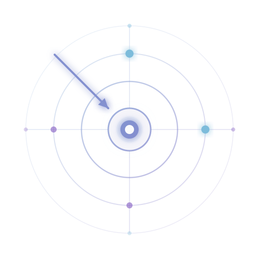
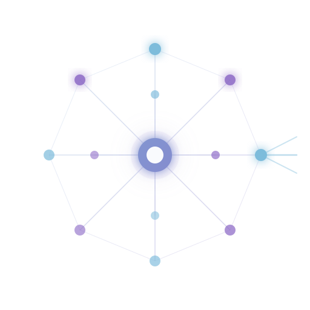
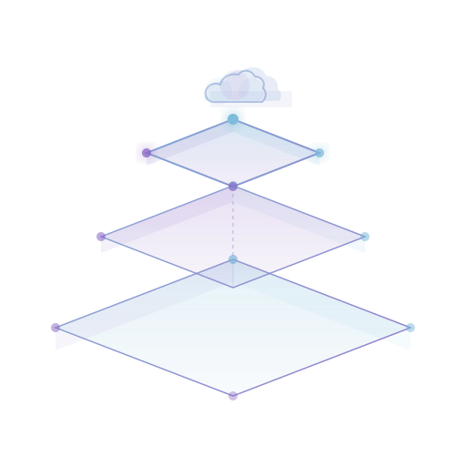
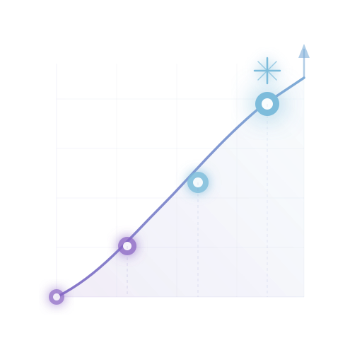

Solutions Data et IA pour transformer votre stratégie en résultats concrets
Nous concevons et déployons des solutions Data, IA et Cloud qui transforment l'ambition en exécution.
Nous concevons et déployons des solutions Data, IA et Cloud qui transforment l'ambition en exécution.
Nos solutions de conseil permettent d'établir une base claire et maîtrisée avant tout déploiement.
Évaluation de l'existant : sources, qualité, architecture, sécurité et maturité pour identifier les écarts et opportunités.
Alignement des enjeux business avec des cas d'usage pertinents, structurés dans une feuille de route claire.
Définition des rôles, gouvernance, processus, standards et ownership pour industrialiser la donnée.
Plans d'adoption pour embarquer durablement les équipes : communication, formation et suivi des usages.

Des données fiables, compréhensibles et utilisables par tous grâce à un cadre de gouvernance solide.
Cadre de pilotage de la donnée : rôles, responsabilités, règles et arbitrages pour garantir cohérence et alignement.
Sécurisation de bout en bout : accès, identités, chiffrement et traçabilité selon vos exigences réglementaires.
Règles de qualité (complétude, exactitude, fraîcheur) et contrôles automatisés pour fiabiliser les données.
Référentiel commun : catalogue, définitions, ownership et lineage pour rendre la donnée trouvable.
Des cas d'usage IA concrets, adoptés et mesurables pour réduire le time-to-value.
Accélération des migrations grâce à l'IA pour analyser l'existant, prioriser et réduire l'effort de conversion.
Copilots pour explorer et exploiter la donnée en langage naturel. Réponses plus rapides, adoption renforcée.
Documentation et cartographie automatisées pour rendre le SI Data lisible et gouvernable.
Génération de scénarios de tests pour augmenter la couverture et détecter les régressions.

Une plateforme Data robuste, évolutive et orientée usage.
Architecture cible alignée sur vos enjeux : Lakehouse, Data Mesh, Platform avec patterns et gouvernance fédérée.
Pipelines d'ingestion et transformation avec standards d'industrialisation : fiabilité, traçabilité et monitoring.
Modèles et indicateurs structurés, dashboards pensés pour la décision et l'opérationnel.
Migration et modernisation de la stack : refonte des flux, optimisation des coûts et sécurisation.
Exploitation : monitoring, gestion d'incidents, SLA, documentation et amélioration continue.

Des formations et accompagnements pour ancrer une culture data et renforcer l'autonomie.
Parcours adaptés aux profils avec équilibre entre concepts, bonnes pratiques et cas concrets.
Accompagnement pour structurer les besoins, prioriser les cas d'usage et améliorer les livrables.
Centre d'excellence transverse pour standardiser, mutualiser et accélérer les pratiques Data.
Sessions ciblées pour ancrer les usages, lever les points de friction et mesurer l'adoption.
Guides opérationnels : patterns, checklists, bonnes pratiques et runbooks pour l'autonomie.

Nous accélérons vos projets grâce à des solutions Data et IA industrielles, orientées impact business.
Audit & priorisation, backlog actionnable, quick wins identifiés, KPI définis dès le départ.
POC avec critères d'acceptation et plan de déploiement à l'échelle.
Des livrables clairs et validables à chaque étape de votre projet.
Transfert de compétences, coaching terrain, formation ciblée pour rendre vos équipes opérationnelles.
Notre méthode en 4 étapes
Audit clair de vos systèmes pour un plan d'action concret
Stratégie structurée avec jalons et indicateurs de succès
POC et solutions Data sur mesure, prêts à l'échelle
Accompagnement et formation pour l'autonomie durable
Parlons de votre contexte pour identifier la bonne trajectoire.
Nous accompagnons les entreprises de toutes tailles au Maroc et en Afrique du Nord : PME en structuration de leur data, ETI en industrialisation, et grands groupes en gouvernance avancée. Nos missions couvrent tous les secteurs : banque, assurance, industrie, retail et services publics.
Un diagnostic stratégique prend généralement 2 à 4 semaines. Une mission complète de mise en place de gouvernance ou d'architecture data s'étend sur 3 à 6 mois. Nous proposons aussi un accompagnement continu pour les organisations qui souhaitent un partenaire durable.
Notre stack repose sur Microsoft Fabric, Power BI, Azure (Synapse, Data Factory, Purview), Databricks et Snowflake. Nous sommes agnostiques et recommandons la meilleure solution selon votre contexte, budget et maturité data.
Oui, nous offrons un premier échange de 30 minutes pour comprendre votre contexte et identifier les leviers d'amélioration. Ce diagnostic initial est gratuit et sans engagement. Contactez-nous via notre formulaire ou par téléphone au +212 613 778 458.
Nous recommandons une approche en 4 étapes : Discover (audit de maturité), Design (architecture cible et roadmap), Deploy (implémentation agile) et Evolve (formation et transfert de compétences). Cette méthode garantit un ROI mesurable dès les premiers mois.